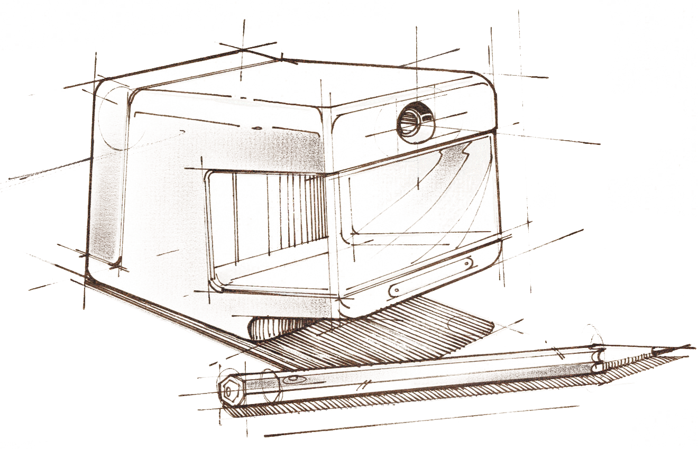

“相遇于此”
我是来自一个名叫湛江的城市的一个小小前端工程师，幸运地在大学生涯的一个机缘巧合下接触到美丽而有趣的前端知识，从此便一发不可收拾地沉醉于前端开发之中。HTML的简洁，CSS的美丽，JAVASCRIPT的有趣以及其他更丰富的前端语言都深深吸引着我，令我情不自已，那么拥有属于我自己的个人网站就那么的理所应当了。在这里，你会更了解我！

Hello,I'm Redchan
欢迎来到我的个人网站
“你好，我是陈国泓”
“相遇于此”
我是来自一个名叫湛江的城市的一个小小前端工程师，幸运地在大学生涯的一个机缘巧合下接触到美丽而有趣的前端知识，从此便一发不可收拾地沉醉于前端开发之中。HTML的简洁，CSS的美丽，JAVASCRIPT的有趣以及其他更丰富的前端语言都深深吸引着我，令我情不自已，那么拥有属于我自己的个人网站就那么的理所应当了。在这里，你会更了解我！
“生涯的的起点”
作为在读大学生一枚，以个人网站作为工作生涯的起点再合适不过了，未来，我相信我会有更多更好的作品在这里呈现给你们欣赏，希望能够有更多的人喜欢和关注我~
“为发烧而生”
本人热爱单反摄影，音乐，旅游，希望有志同道合的朋友们多多和我交流。在这里，我也会经常更新我的作品和游记，也会在这里发表一些对前端的知识与理解~
陈国泓 | 个人中文网
© 2016